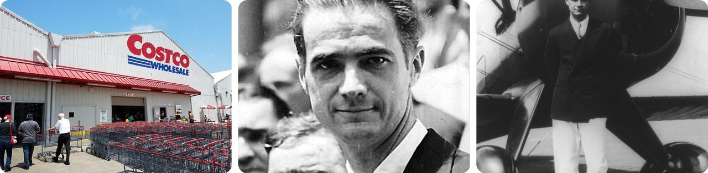
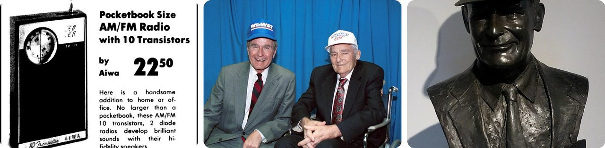
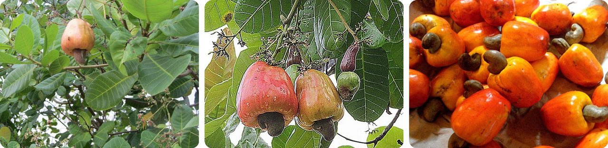
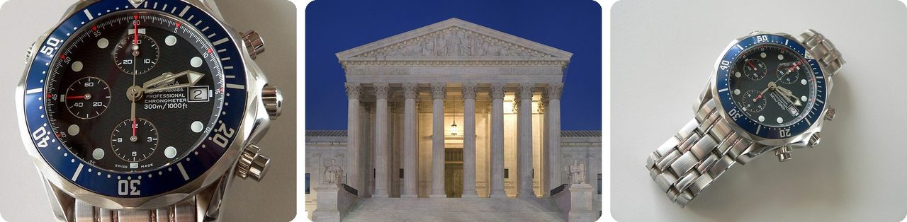
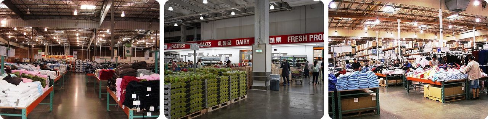
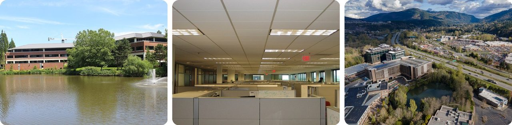
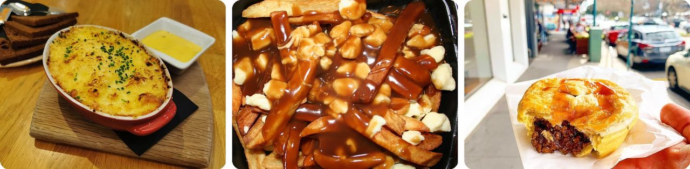
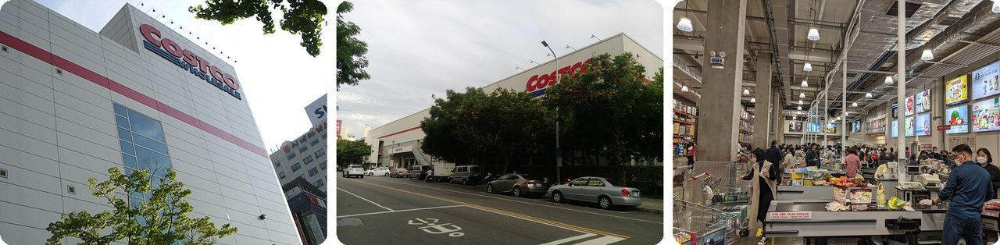
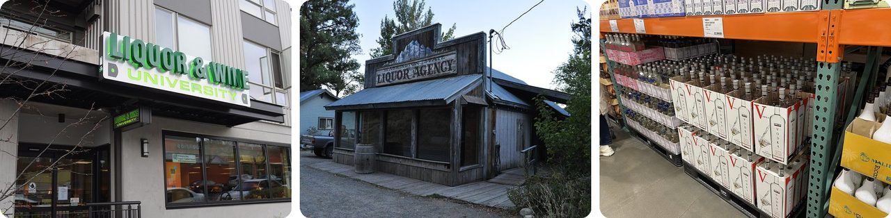
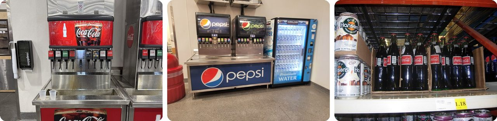

🌍 톱 10 잘 알려지지 않은 코스트코 이야기
2026년 11월 10일
1. 🇺🇸 코스트코의 가장 오래된 매장은 하워드 휴스의 옛 비행기 격납고 안에 있어요

코스트코 가족에서 가장 오래된 매장은 시애틀에 있지 않아요. 샌디에이고의 모레나 대로에 있어요. 1976년 7월 12일, 프라이스 클럽이 이곳에서 문을 열었는데, 억만장자 비행사 하워드 휴스가 갖고 있던 오래된 비행기 격납고 여러 동 안이었어요.처음에는 사업하는 사람만 장을 볼 수 있었어요. 재판매 증명서나 전문 자격증을 보여 주고, 1년에 25달러를 내야 했죠.
프라이스 클럽은 1993년에 코스트코와 합쳐졌어요. 그 첫 건물은 지금 코스트코 401번 매장이고, 50년이 지난 지금도 영업 중이에요.
유명한 억만장자의 옛 차고에서 키친타월을 사는 셈이에요.
2. 🇺🇸 코스트코의 족보는 공무원만 들어갈 수 있던 가게에서 시작돼요

1954년, 나중에 프라이스 클럽을 세운 솔 프라이스가 샌디에이고의 빈 창고에 페드마트(FedMart)를 열었어요. 정부에서 일하는 사람만 장을 볼 수 있었고, 가족 회원비는 겨우 2달러였어요.처음 진열대에는 이상한 조합이 놓였어요. 보석, 가구, 술이었죠. 변호사였던 그의 고객들이 팔던 물건이 바로 그거였거든요. 그래도 첫해에 450만 달러를 벌었어요. 주인들이 예상한 것의 네 배였죠. 코스트코 공동 창업자 짐 시니걸도 1955년에 여기서 장바구니에 물건을 담아 주는 일부터 시작했어요.
그리고 반전이 있어요. 월마트 창업자 샘 월턴은 솔 프라이스에게서 빌린 아이디어가 누구보다 많다고 책에 썼어요. 그리고 "FedMart"라는 이름이 정말 좋아서 "Wal-Mart"라는 이름도 마음에 들었대요.
다시 말해, 월마트의 "마트"는 코스트코의 증조할아버지에게서 왔어요.
3. 🥜 세계 캐슈너트의 절반 이상을 코스트코가 팔아요

2025년 기준으로 코스트코는 전 세계 캐슈너트의 절반 넘게 팔았어요. 코스트코가 어떻게 사느냐에 따라 아프리카의 캐슈 농부 100만 명 이상이 영향을 받아요.캐슈는 아주 이상하게 자라요. 너트 하나하나가 "캐슈 애플"이라는 말랑한 빨간색이나 노란색 열매 아래에 매달려 있어요. 껍데기와 날 씨앗에는 독이 있어서, 껍데기를 벗기고 굽거나 쪄야 안전하게 먹을 수 있어요.
2023년에 전 세계에서 캐슈너트 390만 톤을 거뒀는데, 코트디부아르와 인도가 가장 많았어요.
쉽게 말해, 코스트코가 캐슈를 사러 가면 지구 절반을 위해 장을 보는 거예요.
4. ⌚ 시계 뒷면의 작은 지구 그림 때문에 코스트코가 대법원까지 갔어요

스위스 시계 회사 오메가는 시계 뒷면에 저작권이 있는 작은 지구 그림을 새겼어요. 코스트코는 진짜 오메가 시계를 샀는데, 이 시계들은 외국에서 팔린 뒤 중간 상인들을 거쳐 더 싼 값으로 코스트코 매장에 들어왔어요.오메가는 시계가 가짜라고 하지 않았어요. 그 작은 지구 그림을 두고 소송을 걸었죠. 코스트코가 저작권 있는 그림을 허락 없이 들여왔다는 거예요. 2008년에 항소법원은 오메가 편을 들었어요. 그리고 2010년 대법원 판결은 4 대 4로 갈렸어요. 케이건 대법관이 빠졌기 때문이에요. 그래서 오메가의 승리가 그대로 남았죠.
그런데 사건이 다시 하급 법원으로 돌아가자 판사가 결과를 뒤집었어요. 저작권 있는 그림으로 누가 시계를 팔 수 있는지 통제하는 건 저작권을 잘못 쓰는 거라고요. 2015년에 항소법원도 여기에 동의했고, 오메가가 코스트코의 변호사 비용까지 내게 했어요.
자전거에 스티커를 붙여서 아무도 그 자전거를 되팔지 못하게 하려는 것과 비슷해요.
5. ☀️ 해가 뜨면 코스트코는 불을 꺼요

대부분의 코스트코 매장 지붕에는 채광창이 여러 개 있어요. 전자 조도계가 햇빛이 얼마나 들어오는지 재고, 그만큼 전등을 꺼요.보통의 맑은 날에는 매장 한가운데에 실내등이 하나도 안 켜져 있는 경우가 많아요.
이게 코스트코가 얼마나 알뜰하게 운영되는지 보여 줘요. 1달러를 팔면 이익은 약 2센트이고, 홍보 부서도 없고 외부 광고도 사지 않아요.
하늘이 조절하는 밝기 스위치라고 생각하면 돼요.
6. 🏢 코스트코 CEO는 칸막이 책상에서 일해요

워싱턴주 이사콰에 있는 코스트코 본사에서는 사무실 직원 7,000명이 모두 칸막이 책상에 앉아요. CEO도 마찬가지예요. CEO 자리는 그냥 아주 조금 더 클 뿐이에요.어차피 높은 사람들은 책상에만 앉아 있으면 안 돼요. 대부분의 시간을 매장을 돌아보며 보내야 하고, CEO는 18~24개월마다 전 세계 매장을 최대한 많이 찾아가려고 해요. 본사도 코스트코 매장 바로 옆에 지어서, 구매 담당자들이 걸어가서 뭐가 잘 팔리는지 볼 수 있어요.
지금의 CEO 론 바크리스는 1982년에 애리조나의 한 프라이스 클럽에서 지게차를 몰며 일을 시작했어요.
결국 코스트코의 최고 자리에는 조금 더 큰 칸막이가 따라와요.
7. 🇮🇸 아이슬란드의 코스트코 푸드코트에서는 생선 스튜를 팔아요

코스트코 푸드코트는 어디서나 똑같아 보이지만, 메뉴는 나라마다 달라요. 아이슬란드에 하나뿐인 코스트코에서는 플로크피스쿠르(plokkfiskur)를 팔아요. 흰살생선을 잘게 찢어서 감자, 양파, 크림 소스와 함께 으깬 전통 스튜예요.캐나다에는 푸틴(감자튀김에 치즈 덩어리와 그레이비를 얹은 음식)이 있어요. 오스트레일리아에는 미트파이, 영국에는 재킷 포테이토, 그러니까 통감자 구이가 있어요. 일본, 한국, 대만에는 클램차우더가 있고, 멕시코에는 알 파스토르 타코 고기를 올린 피자가 있어요.
세계 투어를 도는 밴드가 도시마다 그 동네 노래를 한 곡씩 부르는 것과 같아요.
8. 🇰🇷 세계에서 가장 바쁜 코스트코는 서울에 있어요

코스트코는 미국에 매장이 600개가 넘지만, 가장 많이 파는 매장은 그중에 없어요. 2018년에는 서울의 양재점이 지구상의 어떤 코스트코보다 많이 팔았어요.2위는 대만 타이중점이었는데, 회원 수도 모든 코스트코 중에서 가장 많았어요. 대만에는 매장이 14개뿐인데도, 그중 세 곳이 세계 매출 10위 안에 들었어요.
말하자면, 가장 바쁜 코스트코는 회사가 시작된 곳에서 태평양 건너편에 있어요.
9. 🍷 코스트코는 2,200만 달러를 써서 워싱턴주의 주립 술 가게를 끝냈어요

코스트코의 고향인 워싱턴주에서는 예전에 독한 술을 주에서 운영하거나 주의 허가를 받은 술 가게에서만 팔 수 있었어요. 가게들은 와인도 주의 시스템을 통해서만 사들여야 했어요. 코스트코는 와인 규칙을 두고 소송을 걸었다가 2006년에 졌어요.그래서 다른 방법을 썼어요. 시민들이 투표로 법을 바꿀 수 있는 주민 발의안 1183호를 밀어주는 데 2,200만 달러 넘게 썼어요. 반대쪽은 1,175만 달러를 써서, 워싱턴주 역사상 가장 돈이 많이 든 주민 투표 싸움이 됐어요.
2011년 11월 8일, 발의안은 60%의 표를 얻어 통과됐고, 주가 술 판매를 쥐고 있던 시대가 끝났어요.
자기 진열대를 채우려고 아예 규칙을 다시 쓴 가게라고 생각하면 돼요.
10. 🥤 코스트코는 가격 때문에 코카콜라를 안 판 적이 있어요

코스트코가 파는 상품은 약 3,700가지뿐이에요. 월마트 슈퍼센터는 약 14만 가지를 파니까, 거의 40배예요. 그래서 어떤 브랜드가 너무 비싸면 코스트코는 그냥 빼 버릴 수 있어요.2009년 11월, 코스트코는 코카콜라에게 그렇게 했어요. 코카콜라가 도매가를 내려 주지 않았거든요. 다음 달에 코카콜라는 다시 진열대로 돌아왔어요.
그러다 2013년에 코카콜라가 값을 올리자, 미국 푸드코트는 코카콜라 음료 기계를 모두 펩시로 바꿨어요. 코카콜라는 2025년 7월에 매장들이 다시 바꿀 때까지 돌아오지 못했어요.
코카콜라도 코스트코의 가격 검사는 통과해야 해요.
재미있는 사실
2002년, 코스트코는 워싱턴주 벨뷰에서 신선 식품만 파는 "코스트코 프레시"라는 가게를 시험해 봤어요. 로고에는 첫 번째 "o"에서 과일 꼭지가 자라 나와 있었죠. 이 계획은 다음 해에 접혔어요. 코스트코는 그 땅에 보통 매장을 열고 싶어 했지만 2008년에 포기했어요. 지역 규칙대로라면 땅속에 묻힌 개울을 "햇빛 아래로 되살려야", 그러니까 파내서 다시 바깥으로 흐르게 해야 했거든요. 많은 도시의 길 아래에는 옛 개울이 숨어 있고, 그중 일부 도시는 지금 그 개울들을 다시 땅 위로 꺼내고 있어요.
사진 출처 (Wikimedia Commons)
- #1: First PriceClub.jpg by RightCowLeftCoast, CC BY-SA 4.0
- #1: Howard Hughes 1938.jpg by Acme Newspictures, Public domain
- #1: Howard Hughes.jpg by unknown, Public domain
- #2: Vintage Advertising For The Aiwa 10 Transistor Radio In A Fedmart Store Ad In The Independent Newspaper (Long Beach, California), December 10, 1964 (flickr) by France1978, CC BY-SA 2.0
- #2: President George H. W. Bush and Sam Walton.jpg by Photo credit: George Bush Presidential Library and Museum, Public domain
- #2: Walton bust.jpg by Brandonrush, CC0
- #3: Anacardium occidentale Thailand 2013-05-03wb.JPG by Strobilomyces, CC BY-SA 3.0
- #3: Anacardium occidentale-- Cashew apple and nut (30853573405).jpg by Dick Culbert from Gibsons, B.C., Canada, CC BY 2.0
- #3: Cashews.jpg by Bdieu, CC BY 3.0
- #4: Omega Seamaster chronograph watch (300 meters water resist) (cropped).jpg by Rama, CC BY-SA 2.0 fr
- #4: Supreme Court Front Dusk.jpg by Noclip at en.wikipedia, Public domain
- #4: Omega-Seamaster-p1020458.jpg by Rama, CC BY-SA 2.0 fr
- #5: Costco SSF interior.JPG by BrokenSphere, CC BY-SA 3.0
- #5: Costco Kaohsiung interior.jpg by Benlisquare, CC BY-SA 4.0
- #5: Costcointerior.jpg by Original uploader was Coolcaesar at en.wikipedia, CC BY-SA 3.0
- #6: Costcoheadquarters.jpg by Coolcaesar, CC BY-SA 4.0
- #6: Cubicle land.jpg by Larsinio at English Wikipedia, Public domain
- #6: Issaquah aerial, April 2023.png by Spicypepper999, CC0
- #7: Plokkfiskur.jpg by Jasnaah, CC BY-SA 4.0
- #7: Poutine.JPG by Jonathunder, GFDL 1.2
- #7: Aussie meat pie.jpg by Finbar.concaig, CC BY-SA 4.0
- #8: Costco Korea (5452364593).jpg by InSapphoWeTrust from Los Angeles, California, USA, CC BY-SA 2.0
- #8: View of Costco Taichung.jpg by Dquai, CC BY-SA 4.0
- #8: Costco in Korea - 20211029.jpg by Sikander Iqbal, CC BY-SA 4.0
- #9: Washington State Liquor - University outlet 01.jpg by Joe Mabel, CC BY-SA 3.0
- #9: Winthrop, Washington - liquor store 01.jpg by Joe Mabel, CC BY-SA 3.0
- #9: Costco Alcohol Vodka Kirkland.jpg by lazy fri13th, CC BY 2.0
- #10: Coca-Cola vending machines at Costco, October 2025.jpg by Nielsoncaetanosalmeron, CC BY 4.0
- #10: Pepsi and Drinks.png by Curlyrnd, CC BY-SA 4.0
- #10: Coca-Cola Bottles Alaska 2010.jpg by Rowanswiki, CC0


.jpg){kind=link}

_(cropped).jpg){kind=link}


.jpg){kind=link}